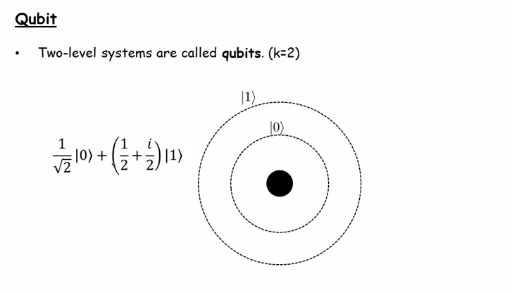
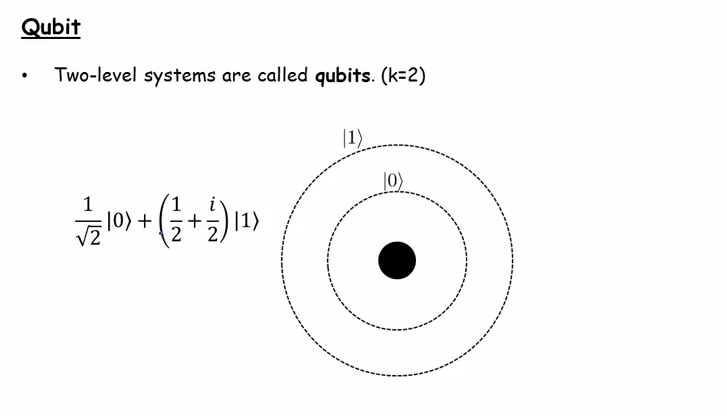

Qubits

Qubits
In a linear superposition of any k states, the probability amplitude is normalised to 1
New python beginner tends to do this
a = [] a.append(1) a.append(2) a.append(3)
It is not a mistake per-se, but definitely a very clumsy style.
a = [1, 2, 3]
Base class stream API
class Stream
def consume(self):
def LA(self, i):
def mark(self):
def index(self):
def rewind(self, marker=None):
def release(self, marker=None):
def seek(self, index):
def size(self):
def getSourceName(self):
The more I know about about oCaml, the more interesting it appears to me.
The inferred static type system is really interesting. It is clearly ahead of many other languages.The only other language I know that has similar feature is Scala.
Algebraic data type is a kind of composite type, i.e. a type formed by combining other types. Two common classes of algebraic type are product types and sum types
I was playing with a Speedo Meter Demo. I added and removed some controls arbitrarily, then I got hit by this error meesage
2012-07-15 22:41:27.145 SpeedometerDemo[6223:f803] *** Terminating app due to uncaught exception 'NSUnknownKeyException', reason: '[setValue:forUndefinedKey:]: this class is not key value coding-compliant for the key test.' *** First throw call stack:
It turned out I added a control ‘test’, linked it to an IBOutlet and then removed the control. Since the link to IBOutlet is still in the IB file, hence the error.
By right mouse click on the ‘Owner’ and remove the invalid link, it fixes the problem.
python exceptions in python antlr package
BacktrackingFailed RecognitionException MismatchedTokenException UnwantedTokenException MissingTokenException MismatchedRangeException MismatchedSetException MismatchedNotSetException NoViableAltException EarlyExitException FailedPredicateException MismatchedTreeNodeException

It has become my habit that I use google search to do simple arithmetic. Now Google improves it further by adding a calculator interface.
Dfa class interface:
class DFA:
def __init__(...):
def predict(self, input):
def noViableAlt(self, s, input):
def error(self, nvae):
def specialStateTransition(self, s, input):
def getDescription(self):
def unpack(cls, string):
Finally reached the final chapter of the book.
The point of departure for the needed [US] policy has to be hard-nosed recognition of the three unprecedented conditions that currently define the geopolitical state of world affairs: for the first time in history, (1) a single state is a truly global power, (2) a non-Eurasian state is globally the preeminent state, and (3) the globe’s central arena, Eurasia, is dominated by a non-Eurasian power.
One of the interesting theme in this book is that it has an taken-for-granted conviction that USA The Only Global Power on Earth is a given. The author does not even try to explain why it should be the case. The whole book is basically a guide or a blueprint of how to project American influence onto Eurasia, the most important landmass on Earth.
This book is still relevant today because it helps one to understand the underlying principle of USA’s foreign policy since the G. W. Bush/Neocon era. ( You probably can argue it is not entirely different from that before then)
While Chapter 6 in ‘The Grand Chessboard’ (1997) by Zbigniew Brzezinski talks a lot about China, it actually talks a lot more about Japan.
The author has a rather clear idea why Japan is isolated in the Asia region. The dilemma of Japan: if Japan tries to assert its regional leadership role to counter China, it will find itself surrounded by a hostile Russia, a distrusting Korea and South East Asia, and a China that will play a rapid catch-up. Basically the only way forward, as seen by Zbigniew, is for Japan to leverage its alliance with America to gain influence on International stage.
Chapter 6, titled ‘The Far Eastern Anchor’, in ‘The Grand Chessboard’ (1997) by Zbigniew Brzezinski is about Asia. In regard to China, Zbigniew said:
“Chinese consumption of energy is already expanding at a rate that far exceeds domestic production. That excess will widen in any case, but especially so if China’s rate of growth continues to be very high.”
I am always impressed by how well scholars or researchers in the Stats have done in the study of China. Remember the Economists have predicted cruel oil price would hit $5 a barrel in 1999? This was apparently a prediction based on extrapolation of the then oil price movement. But a geo-strategist sees beyond short-run trends and tries to foresee how nations will engage each others to compete for finite resource on planet Earth.
Actually reading this book now I realise a fair numbers of predictions made in this chapter are not too far off the mark, e.g.
1) energy and food supply issue
2) when China will surpass Japan’s GDP (‘within two decades [from 1997]’), and may rival that of USA
3) Tension between China and other Asian countries
Classes in recognizers.py
RecognizerSharedState BaseRecognizer TokenSource Lexer Parser RuleReturnScope ParserRuleReturnScope
In objective-c, if you have an variable of type id but you want to call a certain method on it as if it an instance of a specific class, you can do it this way:
id test = [[TestDynamic alloc] init];
if ([test respondsToSelector:@selector(myFunction)]) {
[test myFunction];
}
Here is the definition of the TestDynamic class:
#import <Foundation/Foundation.h> @interface TestDynamic : NSObject -(void) myFunction; @end
In static languages, you will need to test if the variable is of type TestDynamic, then cast it to TestDynamic before you can call myFunction
In chapter 5, ‘The Eurasian Balkans’, of ‘The Grand Chessboard’ (1997) by Zbigniew Brzezinski, it covers the histories of Central Asia that was part of the former USSR. The three states of the Caucasus—Armenia, Georgia, and Azerbaijan—can be said to be based on truly historic nations. But the frontiers of five new Central Asian states were drawn arbitrarily by Soviet cartographers in the 1920s and 1930s. They are rich in resource but of relatively weak power. It invites Russia, Turkey and Iran to contest to fill the power vacuum.
Interestingly read because I know nothing about this part of the world.
iOS 5 added a remote virtual interface (RVI) facility that lets you use Mac OS X packet trace programs to capture traces from an iOS device.
In chapter 4 of ‘The Grand Chessboard’ (1997), Zbigniew Brzezinski discusses the void of power in the former Soviet territory after the collapse of USSR. The material and analysis is very dated. For one, President Yeltsin was still in power when this chapter is written. Current Russian administration bears little resemblance to Yeltsin’s government.
A lot of subjective wishes as to what Russian should do or not.
In chapter 3 of ‘The Grand Chessboard’ (1997), Zbigniew Brzezinski discusses the role of France and Germany in the EU, and predicted EU’s possible path of further eastward integration. If Ukraine is accepted into EU, a new European core will be formed: France + Germany + Poland + Ukraine.
You can see why Russia is so anxious about Ukraine.
The belief that Saint Peter was given special authority by Christ that has since passed on to each Pope. The Archbishop of Rome (i.e. the Pope) was in direct apostolic lineage back to Saint Peter
From ‘The Grand Chessboard’ (1997) by Zbigniew Brzezinski,
“The political momentum for Europe’s unification was once driven by three main impulses: the memories of the destructive two world wars, the desire for economic recovery, and the insecurity generated by the Soviet threat. By the mid-nineties, however, these impulses had faded. Economic recovery by and large has been achieved; if anything, the problem Europe increasingly faces is that of an excessively burdensome welfare system that is sapping its economic vitality, while the passionate resistance to any reform by special interests is diverting European political attention inward. “
“An excessively burdensome welfare system” is probably the root cause of the current debt crisis in eurozone
Use currentTitle to obtain the caption title of a UIButton
XIST gene is only expressed in females and is used to turn off (most) genes on extra X chromosome
Minimum font size: 13 points
From ‘The Grand Chessboard’ (1997) by Zbigniew Brzezinski,
“Ukraine, a new and important space on the Eurasian chessboard, is a geopolitical pivot because its very existence as an independent country helps to transform Russia. Without Ukraine, Russia ceases to be a Eurasian empire.”
Comfortable minimum size: 44x44 points
From ‘The Grand Chessboard’ (1997) by Zbigniew Brzezinski,
“Never before has a populist democracy attained international supremacy. But the pursuit of power is not a goal that commands popular passion, except in conditions of a sudden threat or challenge to the public’s sense of domestic well-being. The economic self-denial (that is, defense spending) and the human sacrifice (casualties even among professional soldiers) required in the effort are uncongenial to democratic instincts. Democracy is inimical to imperial mobilization.”
Democractic vales are inherently contradictory to empire building…
For a 2-dim array, axis 0 is the y-axis and 1 is the x-axis
>>> b = numpy.random.random(9)
>>> b.resize(3,3)
>>> b
array([[ 0.87004074, 0.96632953, 0.23284793],
[ 0.51685093, 0.28653961, 0.10544557],
[ 0.06448447, 0.62316361, 0.93653307]])
>>> numpy.sum(b, axis=0)
array([ 1.45137614, 1.87603274, 1.27482656])
>>> numpy.sum(b, axis=1)
array([ 2.06921819, 0.90883611, 1.62418114])
From ‘The Grand Chessboard’ (1997) by Zbigniew Brzezinski,
“The overseas British Empire was initially acquired through a combination of exploration, trade, and conquest. But much like its Roman and Chinese predecessors or its French and Spanish rivals, it also derived a great deal of its staying power from the perception of British cultural superiority.”
‘Cultural superiority’ as the key to the staying power of an empire is the main theme in the book so far
From ‘The Grand Chessboard’ (1997) by Zbigniew Brzezinski,
“Even so, the Roman Empire was not unique. The Roman and the Chinese empires emerged almost contemporaneously, though neither was aware of the other.”
It is not entirely true. There are mentioning of a big empire in the far west named ‘Great Qin’ (大秦) in ancient official documentation e.g. the Book of Late Han. But the majority of populace probably did not know it.
Reading ‘The Grand Chessboard’ (1997) by Zbigniew Brzezinski and come across this passage on p. 9:
The Chinese, for whom the word “Russia” means “the hungry land,” were even more openly contemptuous.
I am really surprised to see this because the name of Russia is just translated phonetically into Chinese. Each syllable is mapped into a Chinese character which carries a similar sound. There is no special meaning in the words themselves.
But the history of this ‘translation by phonetic’ business does reflect an interesting evolution of how Chinese view the outside worlds.
Basically, as is the case in most other languages, you can segregate chinese characters into three categories in term of connotations: positive, neutral and derogative.
Up until the end of Qing dynasty, since Han people consider their culture as the most advanced in the entire universe, any race or country outside of the sino-culture sphere is seen as barbaric. So the Chinese translators will usually use the derogative character set to make up the phonetic translation of these alien names. The resultant combination usually do not make any sense but you can infer, by the choice of individual characters, if it is a name of a barbarian.
More classy combination of characters are usually sought for as names of religious figures of significance.
This practice basically ceased when China became a republic in 1911, I suppose. Nowadays usually only characters of positive or neutral nature will be used in phonetic translation. In rare case literal translation is used. A good recent example is Montenegro. It is literally translated as ‘Black Mountain Republic’ in Chinese.
Quoted from Expert Python Programming by Tarek Ziadé
The Singleton pattern makes sure that a given class has always only one living instance in the application. This can be used, for example, when you want to restrict a resource access to one and only one memory context in the process. For instance, a database connector class can be a Singleton that deals with synchronization and manages its data in memory. It makes the assumption that no other instance is interacting with the database in the meantime. This pattern can simplify a lot the way concurrency is handled in an application. Utilities that provide application-wide functions are often declared as Singletons. For instance, in web applications, a class that is in charge of reserving a unique document ID would benefit from the Singleton pattern. There should be one and only one utility doing this job.
Implementing the Singleton pattern is straightforward with the new method:
>>> class Singleton(object): ... def __new__(cls, *args, **kw): ... if not hasattr(cls, '_instance'): ... orig = super(Singleton, cls) ... cls._instance = orig.__new__(cls, *args, **kw) ... return cls._instance ... >>> class MyClass(Singleton): ... a =1 ... >>> one = MyClass() >>> two = MyClass() >>> two.a = 3 >>> one.a 3
Although the problem with this pattern is subclassing; all instances will be instances of MyClass no matter what the method resolution order (__mro__) says:
>>> class MyOtherClass(MyClass):
... b= 2
...
>>> three = MyOtherClass()
>>> three.b
Traceback (most recent call last):
File "", line 1, in ?
AttributeError: 'MyClass' object has no attribute 'b'
To avoid this limitation, Alex Martelli proposed an alternative implementation based on shared state called Borg.
The idea is quite simple. What really matters in the Singleton pattern is not the number of living instances a class has, but rather the fact that they all share the same state at all times. So Alex Martelli came up with a class that makes all instances of the class share the same dict:
>>> class Borg(object)
... _state = {}
... def __new__(cls, *args, **kw):
... ob = super(Borg, cls).__new__(cls, *args, **kw)
... ob.__dict__ = cls._state
... return ob
...
>>> class MyClass(Borg):
... a =1
...
>>> one = MyClass()
>>> two = MyClass()
>>> two.a = 3
>>> one.a
[
3
>>> class MyOtherClass(MyClass): ... b= 2
...
>>> three = MyOtherClass()
>>> three.b
2
>>> three.a
3
>>> three.a = 2
>>> one.a
2
This fixes the subclassing issue, but is still dependent on how the subclass code works. For instance, if getattr is overridden, the pattern can be broken.
Nevertheless, Singletons should not have several levels of inheritance. A class that is marked as a Singleton is already specific.
That said, this pattern is considered by many developers as a heavy way to deal with uniqueness in an application. If a Singleton is needed, why not use a module with functions instead, since a Python module is a Singleton?
Simple Numpy example. To illustrate the use of arange and resize
>>> from numpy.random import *
>>> a = arange(1, 20, 2)
>>> a
array([ 1, 3, 5, 7, 9, 11, 13, 15, 17, 19])
>>> a.resize(2,5)
>>> a
array([[ 1, 3, 5, 7, 9],
[11, 13, 15, 17, 19]])
It is never easy with easy_install.
Despite the error messages at the end, the installation seems to work.
mbp002:python antkong$ ./easy_install-2.7 numpy-1.6.2
Searching for numpy-1.6.2
Reading http://pypi.python.org/simple/numpy-1.6.2/
Couldn't find index page for 'numpy-1.6.2' (maybe misspelled?)
Scanning index of all packages (this may take a while)
Reading http://pypi.python.org/simple/
^Cinterrupted
mbp002:python antkong$ ./easy_install-2.7 numpy
Searching for numpy
Reading http://pypi.python.org/simple/numpy/
Reading http://numpy.scipy.org
Reading http://sourceforge.net/project/showfiles.php?group_id=1369&package_id=175103
Reading http://numeric.scipy.org
Best match: numpy 1.6.2
Downloading http://pypi.python.org/packages/source/n/numpy/numpy-1.6.2.zip#md5=7e13c931985f90efcfa0408f845d6fee
Processing numpy-1.6.2.zip
Writing /var/folders/p6/0ngqkfy57rq48g4k3jt6rq0c0000gn/T/easy_install-6a51Gw/numpy-1.6.2/setup.cfg
Running numpy-1.6.2/setup.py -q bdist_egg --dist-dir /var/folders/p6/0ngqkfy57rq48g4k3jt6rq0c0000gn/T/easy_install-6a51Gw/numpy-1.6.2/egg-dist-tmp-4w8nPc
Running from numpy source directory.non-existing path in '/private/var/folders/p6/0ngqkfy57rq48g4k3jt6rq0c0000gn/T/easy_install-6a51Gw/numpy-1.6.2/numpy/distutils': 'site.cfg'
Could not locate executable f95
Could not locate executable f90
Could not locate executable f77
Could not locate executable xlf90
Could not locate executable xlf
Could not locate executable ifort
Could not locate executable ifc
Could not locate executable g77
Found executable /usr/local/bin/gfortran
_configtest.c:1:20: error: endian.h: No such file or directory
_configtest.c:1:20: error: endian.h: No such file or directory
_configtest.c: In function ‘main’:
_configtest.c:5: error: size of array ‘test_array’ is negative
_configtest.c: In function ‘main’:
_configtest.c:5: error: size of array ‘test_array’ is negative
_configtest.c: In function ‘main’:
_configtest.c:5: error: size of array ‘test_array’ is negative
_configtest.c: In function ‘main’:
_configtest.c:5: error: size of array ‘test_array’ is negative
_configtest.c: In function ‘main’:
_configtest.c:5: error: size of array ‘test_array’ is negative
_configtest.c: In function ‘main’:
_configtest.c:5: error: size of array ‘test_array’ is negative
_configtest.c: In function ‘main’:
_configtest.c:5: error: size of array ‘test_array’ is negative
_configtest.c: In function ‘main’:
_configtest.c:5: error: size of array ‘test_array’ is negative
_configtest.c: In function ‘main’:
_configtest.c:5: error: size of array ‘test_array’ is negative
_configtest.c: In function ‘main’:
_configtest.c:5: error: size of array ‘test_array’ is negative
_configtest.c: In function ‘main’:
_configtest.c:5: error: size of array ‘test_array’ is negative
_configtest.c: In function ‘main’:
_configtest.c:5: error: size of array ‘test_array’ is negative
_configtest.c: In function ‘main’:
_configtest.c:5: error: size of array ‘test_array’ is negative
_configtest.c: In function ‘main’:
_configtest.c:5: error: size of array ‘test_array’ is negative
_configtest.c: In function ‘main’:
_configtest.c:5: error: size of array ‘test_array’ is negative
_configtest.c: In function ‘main’:
_configtest.c:5: error: size of array ‘test_array’ is negative
_configtest.c: In function ‘main’:
_configtest.c:5: error: size of array ‘test_array’ is negative
_configtest.c: In function ‘main’:
_configtest.c:5: error: size of array ‘test_array’ is negative
_configtest.c: In function ‘main’:
_configtest.c:5: error: size of array ‘test_array’ is negative
_configtest.c: In function ‘main’:
_configtest.c:5: error: size of array ‘test_array’ is negative
_configtest.c: In function ‘main’:
_configtest.c:5: error: size of array ‘test_array’ is negative
_configtest.c: In function ‘main’:
_configtest.c:5: error: size of array ‘test_array’ is negative
_configtest.c: In function ‘main’:
_configtest.c:5: error: size of array ‘test_array’ is negative
_configtest.c: In function ‘main’:
_configtest.c:5: error: size of array ‘test_array’ is negative
_configtest.c: In function ‘main’:
_configtest.c:5: error: size of array ‘test_array’ is negative
_configtest.c: In function ‘main’:
_configtest.c:5: error: size of array ‘test_array’ is negative
_configtest.c: In function ‘main’:
_configtest.c:7: error: ‘SIZEOF_LONGDOUBLE’ undeclared (first use in this function)
_configtest.c:7: error: (Each undeclared identifier is reported only once
_configtest.c:7: error: for each function it appears in.)
_configtest.c: In function ‘main’:
_configtest.c:7: error: ‘SIZEOF_LONGDOUBLE’ undeclared (first use in this function)
_configtest.c:7: error: (Each undeclared identifier is reported only once
_configtest.c:7: error: for each function it appears in.)
_configtest.c: In function ‘main’:
_configtest.c:5: error: size of array ‘test_array’ is negative
_configtest.c: In function ‘main’:
_configtest.c:5: error: size of array ‘test_array’ is negative
_configtest.c: In function ‘main’:
_configtest.c:5: error: size of array ‘test_array’ is negative
_configtest.c: In function ‘main’:
_configtest.c:5: error: size of array ‘test_array’ is negative
_configtest.c: In function ‘main’:
_configtest.c:5: error: size of array ‘test_array’ is negative
_configtest.c: In function ‘main’:
_configtest.c:5: error: size of array ‘test_array’ is negative
_configtest.c: In function ‘main’:
_configtest.c:5: error: size of array ‘test_array’ is negative
_configtest.c: In function ‘main’:
_configtest.c:5: error: size of array ‘test_array’ is negative
_configtest.c: In function ‘main’:
_configtest.c:5: error: size of array ‘test_array’ is negative
_configtest.c: In function ‘main’:
_configtest.c:5: error: size of array ‘test_array’ is negative
_configtest.c: In function ‘main’:
_configtest.c:5: error: size of array ‘test_array’ is negative
_configtest.c: In function ‘main’:
_configtest.c:5: error: size of array ‘test_array’ is negative
_configtest.c: In function ‘main’:
_configtest.c:5: error: size of array ‘test_array’ is negative
_configtest.c: In function ‘main’:
_configtest.c:5: error: size of array ‘test_array’ is negative
_configtest.c: In function ‘main’:
_configtest.c:5: error: size of array ‘test_array’ is negative
_configtest.c: In function ‘main’:
_configtest.c:5: error: size of array ‘test_array’ is negative
_configtest.c: In function ‘main’:
_configtest.c:5: error: size of array ‘test_array’ is negative
_configtest.c: In function ‘main’:
_configtest.c:5: error: size of array ‘test_array’ is negative
_configtest.c: In function ‘main’:
_configtest.c:5: error: size of array ‘test_array’ is negative
_configtest.c: In function ‘main’:
_configtest.c:5: error: size of array ‘test_array’ is negative
_configtest.c: In function ‘main’:
_configtest.c:5: error: size of array ‘test_array’ is negative
_configtest.c: In function ‘main’:
_configtest.c:5: error: size of array ‘test_array’ is negative
_configtest.c: In function ‘main’:
_configtest.c:5: error: size of array ‘test_array’ is negative
_configtest.c: In function ‘main’:
_configtest.c:5: error: size of array ‘test_array’ is negative
_configtest.c: In function ‘main’:
_configtest.c:5: error: size of array ‘test_array’ is negative
_configtest.c: In function ‘main’:
_configtest.c:5: error: size of array ‘test_array’ is negative
_configtest.c: In function ‘main’:
_configtest.c:5: error: size of array ‘test_array’ is negative
_configtest.c: In function ‘main’:
_configtest.c:5: error: size of array ‘test_array’ is negative
_configtest.c: In function ‘main’:
_configtest.c:7: error: size of array ‘test_array’ is negative
_configtest.c: In function ‘main’:
_configtest.c:7: error: size of array ‘test_array’ is negative
_configtest.c: In function ‘main’:
_configtest.c:8: error: ‘HAVE_DECL_SIGNBIT’ undeclared (first use in this function)
_configtest.c:8: error: (Each undeclared identifier is reported only once
_configtest.c:8: error: for each function it appears in.)
_configtest.c: In function ‘main’:
_configtest.c:8: error: ‘HAVE_DECL_SIGNBIT’ undeclared (first use in this function)
_configtest.c:8: error: (Each undeclared identifier is reported only once
_configtest.c:8: error: for each function it appears in.)
_configtest.c: In function ‘main’:
_configtest.c:7: error: ‘Py_UNICODE_WIDE’ undeclared (first use in this function)
_configtest.c:7: error: (Each undeclared identifier is reported only once
_configtest.c:7: error: for each function it appears in.)
_configtest.c: In function ‘main’:
_configtest.c:7: error: ‘Py_UNICODE_WIDE’ undeclared (first use in this function)
_configtest.c:7: error: (Each undeclared identifier is reported only once
_configtest.c:7: error: for each function it appears in.)
('File:', 'build/src.macosx-10.4-x86_64-2.7/numpy/core/include/numpy/config.h')
#define SIZEOF_PY_INTPTR_T 8
#define SIZEOF_PY_LONG_LONG 8
#define MATHLIB
#define HAVE_SIN
#define HAVE_COS
#define HAVE_TAN
#define HAVE_SINH
#define HAVE_COSH
#define HAVE_TANH
#define HAVE_FABS
#define HAVE_FLOOR
#define HAVE_CEIL
#define HAVE_SQRT
#define HAVE_LOG10
#define HAVE_LOG
#define HAVE_EXP
#define HAVE_ASIN
#define HAVE_ACOS
#define HAVE_ATAN
#define HAVE_FMOD
#define HAVE_MODF
#define HAVE_FREXP
#define HAVE_LDEXP
#define HAVE_RINT
#define HAVE_TRUNC
#define HAVE_EXP2
#define HAVE_LOG2
#define HAVE_ATAN2
#define HAVE_POW
#define HAVE_NEXTAFTER
#define HAVE_SINF
#define HAVE_COSF
#define HAVE_TANF
#define HAVE_SINHF
#define HAVE_COSHF
#define HAVE_TANHF
#define HAVE_FABSF
#define HAVE_FLOORF
#define HAVE_CEILF
#define HAVE_RINTF
#define HAVE_TRUNCF
#define HAVE_SQRTF
#define HAVE_LOG10F
#define HAVE_LOGF
#define HAVE_LOG1PF
#define HAVE_EXPF
#define HAVE_EXPM1F
#define HAVE_ASINF
#define HAVE_ACOSF
#define HAVE_ATANF
#define HAVE_ASINHF
#define HAVE_ACOSHF
#define HAVE_ATANHF
#define HAVE_HYPOTF
#define HAVE_ATAN2F
#define HAVE_POWF
#define HAVE_FMODF
#define HAVE_MODFF
#define HAVE_FREXPF
#define HAVE_LDEXPF
#define HAVE_EXP2F
#define HAVE_LOG2F
#define HAVE_COPYSIGNF
#define HAVE_NEXTAFTERF
#define HAVE_SINL
#define HAVE_COSL
#define HAVE_TANL
#define HAVE_SINHL
#define HAVE_COSHL
#define HAVE_TANHL
#define HAVE_FABSL
#define HAVE_FLOORL
#define HAVE_CEILL
#define HAVE_RINTL
#define HAVE_TRUNCL
#define HAVE_SQRTL
#define HAVE_LOG10L
#define HAVE_LOGL
#define HAVE_LOG1PL
#define HAVE_EXPL
#define HAVE_EXPM1L
#define HAVE_ASINL
#define HAVE_ACOSL
#define HAVE_ATANL
#define HAVE_ASINHL
#define HAVE_ACOSHL
#define HAVE_ATANHL
#define HAVE_HYPOTL
#define HAVE_ATAN2L
#define HAVE_POWL
#define HAVE_FMODL
#define HAVE_MODFL
#define HAVE_FREXPL
#define HAVE_LDEXPL
#define HAVE_EXP2L
#define HAVE_LOG2L
#define HAVE_COPYSIGNL
#define HAVE_NEXTAFTERL
#define HAVE_DECL_SIGNBIT
#define HAVE_COMPLEX_H
#define HAVE_CREAL
#define HAVE_CIMAG
#define HAVE_CABS
#define HAVE_CARG
#define HAVE_CEXP
#define HAVE_CSQRT
#define HAVE_CLOG
#define HAVE_CCOS
#define HAVE_CSIN
#define HAVE_CPOW
#define HAVE_CREALF
#define HAVE_CIMAGF
#define HAVE_CABSF
#define HAVE_CARGF
#define HAVE_CEXPF
#define HAVE_CSQRTF
#define HAVE_CLOGF
#define HAVE_CCOSF
#define HAVE_CSINF
#define HAVE_CPOWF
#define HAVE_CREALL
#define HAVE_CIMAGL
#define HAVE_CABSL
#define HAVE_CARGL
#define HAVE_CEXPL
#define HAVE_CSQRTL
#define HAVE_CLOGL
#define HAVE_CCOSL
#define HAVE_CSINL
#define HAVE_CPOWL
#ifndef __cplusplus
/* #undef inline */
#endif
#ifndef _NPY_NPY_CONFIG_H_
#error config.h should never be included directly, include npy_config.h instead
#endif
EOF
File: build/src.macosx-10.4-x86_64-2.7/numpy/core/include/numpy/_numpyconfig.h
#define NPY_SIZEOF_SHORT SIZEOF_SHORT
#define NPY_SIZEOF_INT SIZEOF_INT
#define NPY_SIZEOF_LONG SIZEOF_LONG
#define NPY_SIZEOF_FLOAT 4
#define NPY_SIZEOF_COMPLEX_FLOAT 8
#define NPY_SIZEOF_DOUBLE 8
#define NPY_SIZEOF_COMPLEX_DOUBLE 16
#define NPY_SIZEOF_LONGDOUBLE 16
#define NPY_SIZEOF_COMPLEX_LONGDOUBLE 32
#define NPY_SIZEOF_PY_INTPTR_T 8
#define NPY_SIZEOF_PY_LONG_LONG 8
#define NPY_SIZEOF_LONGLONG 8
#define NPY_NO_SMP 0
#define NPY_HAVE_DECL_ISNAN
#define NPY_HAVE_DECL_ISINF
#define NPY_HAVE_DECL_ISFINITE
#define NPY_HAVE_DECL_SIGNBIT
#define NPY_USE_C99_COMPLEX
#define NPY_HAVE_COMPLEX_DOUBLE 1
#define NPY_HAVE_COMPLEX_FLOAT 1
#define NPY_HAVE_COMPLEX_LONG_DOUBLE 1
#define NPY_USE_C99_FORMATS 1
#define NPY_VISIBILITY_HIDDEN __attribute__((visibility("hidden")))
#define NPY_ABI_VERSION 0x01000009
#define NPY_API_VERSION 0x00000006
#ifndef __STDC_FORMAT_MACROS
#define __STDC_FORMAT_MACROS 1
#endif
EOF
non-existing path in '/private/var/folders/p6/0ngqkfy57rq48g4k3jt6rq0c0000gn/T/easy_install-6a51Gw/numpy-1.6.2/numpy/core': 'build/src.macosx-10.4-x86_64-2.7/numpy/core/src/multiarray'
non-existing path in '/private/var/folders/p6/0ngqkfy57rq48g4k3jt6rq0c0000gn/T/easy_install-6a51Gw/numpy-1.6.2/numpy/core': 'build/src.macosx-10.4-x86_64-2.7/numpy/core/src/umath'
zip_safe flag not set; analyzing archive contents...
numpy._import_tools: module references __file__
numpy._import_tools: module references __path__
numpy.core.generate_numpy_api: module references __file__
numpy.core.scons_support: module references __file__
numpy.core.setup: module references __file__
numpy.core.setup_common: module references __file__
numpy.distutils.exec_command: module references __file__
numpy.distutils.misc_util: module references __file__
numpy.distutils.npy_pkg_config: module references __file__
numpy.distutils.system_info: module references __file__
numpy.distutils.command.build_src: module references __file__
numpy.distutils.command.scons: module references __file__
numpy.distutils.fcompiler.__init__: module references __file__
numpy.distutils.fcompiler.compaq: module references __file__
numpy.doc.__init__: module references __file__
numpy.f2py.diagnose: module references __file__
numpy.f2py.f2py2e: module references __file__
numpy.f2py.setup: module references __file__
numpy.f2py.setupscons: module references __file__
numpy.lib.utils: module references __file__
numpy.lib.utils: module references __path__
numpy.lib.utils: module MAY be using inspect.getsource
numpy.lib.utils: module MAY be using inspect.getsourcefile
numpy.numarray.util: module references __file__
numpy.testing.noseclasses: module references __file__
numpy.testing.nosetester: module references __file__
numpy.testing.numpytest: module references __file__
numpy.testing.utils: module references __file__
Adding numpy 1.6.2 to easy-install.pth file
Installing f2py2.7 script to /usr/local/share/python
Installed /usr/local/lib/python2.7/site-packages/numpy-1.6.2-py2.7-macosx-10.4-x86_64.egg
Processing dependencies for numpy
Finished processing dependencies for numpy
/var/folders/p6/0ngqkfy57rq48g4k3jt6rq0c0000gn/T/easy_install-6a51Gw/numpy-1.6.2/numpy/distutils/misc_util.py:252: RuntimeWarning: Parent module 'numpy.distutils' not found while handling absolute import
Error in atexit._run_exitfuncs:
Traceback (most recent call last):
File "/usr/local/Cellar/python/2.7.2/lib/python2.7/atexit.py", line 24, in _run_exitfuncs
func(*targs, **kargs)
File "/var/folders/p6/0ngqkfy57rq48g4k3jt6rq0c0000gn/T/easy_install-6a51Gw/numpy-1.6.2/numpy/distutils/misc_util.py", line 252, in clean_up_temporary_directory
ImportError: No module named numpy.distutils
Error in sys.exitfunc:
Traceback (most recent call last):
File "/usr/local/Cellar/python/2.7.2/lib/python2.7/atexit.py", line 24, in _run_exitfuncs
func(*targs, **kargs)
File "/var/folders/p6/0ngqkfy57rq48g4k3jt6rq0c0000gn/T/easy_install-6a51Gw/numpy-1.6.2/numpy/distutils/misc_util.py", line 252, in clean_up_temporary_directory
ImportError: No module named numpy.distutils
My easy_install script is installed to /usr/local/share/python
Got this when running brew install python3
mkdir: /usr/local/Cellar/sqlite/3.7.12.1/lib: File exists make[1]: *** [install-libLTLIBRARIES] Error 1 make[1]: *** Waiting for unfinished jobs.... /usr/bin/install -c -m 644 sqlite3.h sqlite3ext.h '/usr/local/Cellar/sqlite/3.7.12.1/include' /usr/bin/install -c -m 644 sqlite3.pc '/usr/local/Cellar/sqlite/3.7.12.1/lib/pkgconfig' /usr/bin/install -c -m 644 sqlite3.1 '/usr/local/Cellar/sqlite/3.7.12.1/share/man/man1' make: *** [install-am] Error 2 config.log was copied to /Users/antkong/Library/Logs/Homebrew
Running brew update and brew doctor
A creational pattern provides a particular instantiation mechanism. It can be a particular object factory or even a class factory. This is an important pattern in compiled languages such as C, since it is harder to generate types on-demand at run time.
But this feature is built-in in Python, for instance the type built-in, which lets you define a new type by code:
>>> MyType = type('MyType', (object,), {'a': 1})
>>> ob = MyType()
>>> type(ob)
>>> ob.a
1
>>> isinstance(ob, object)
True
Classes and types are built-in factories
I was thinking that the rocket had twenty thousand components, and each was made by the lowest bidder
After John Glenn’s historic orbital flight, interviewers asked him what he thought as he waited for lift-off
The medical name of mike spots (aka miliaria) is Pityrosporum folliculitis.
Use python setup.py sdist to create source code release archive